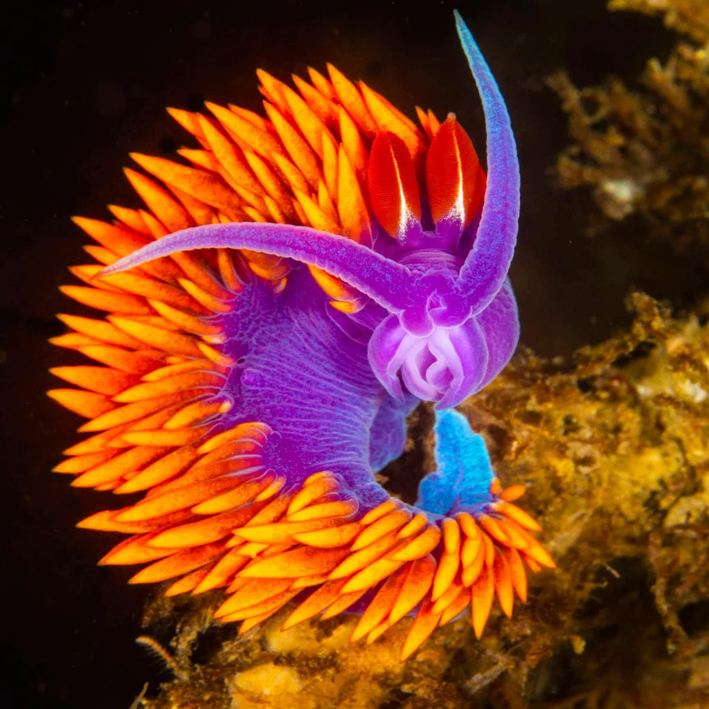
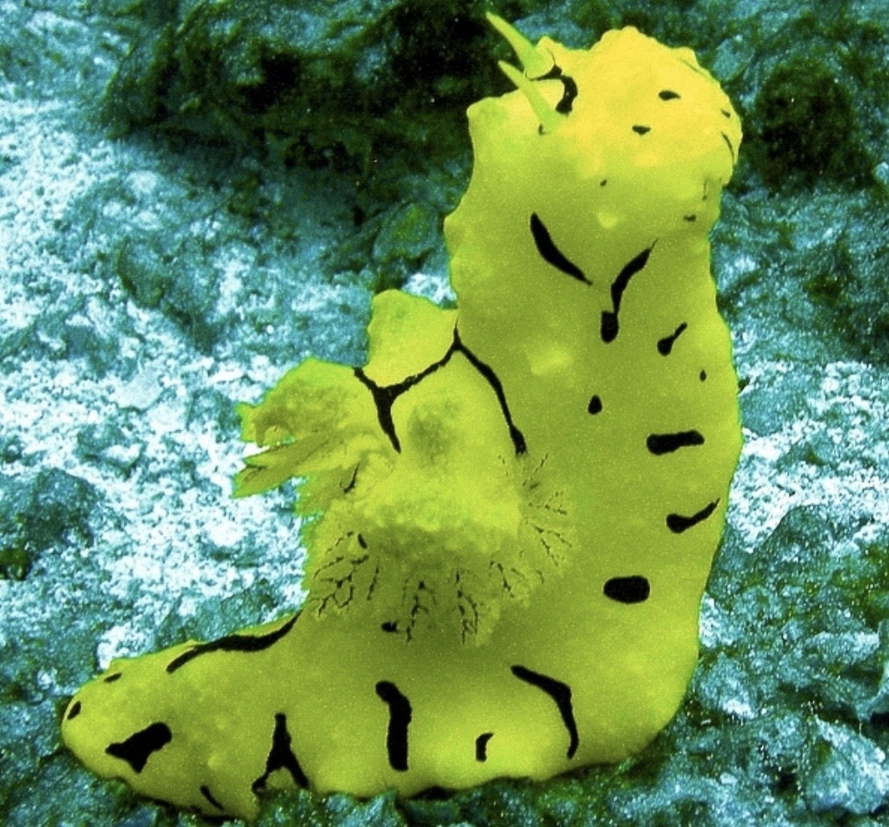
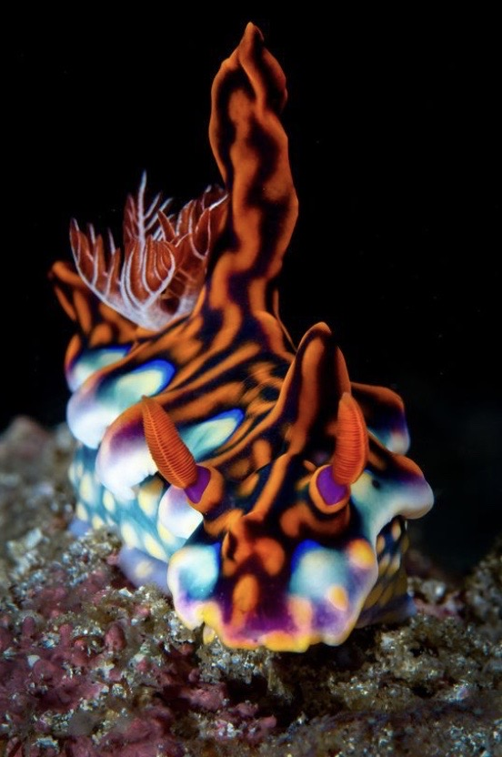
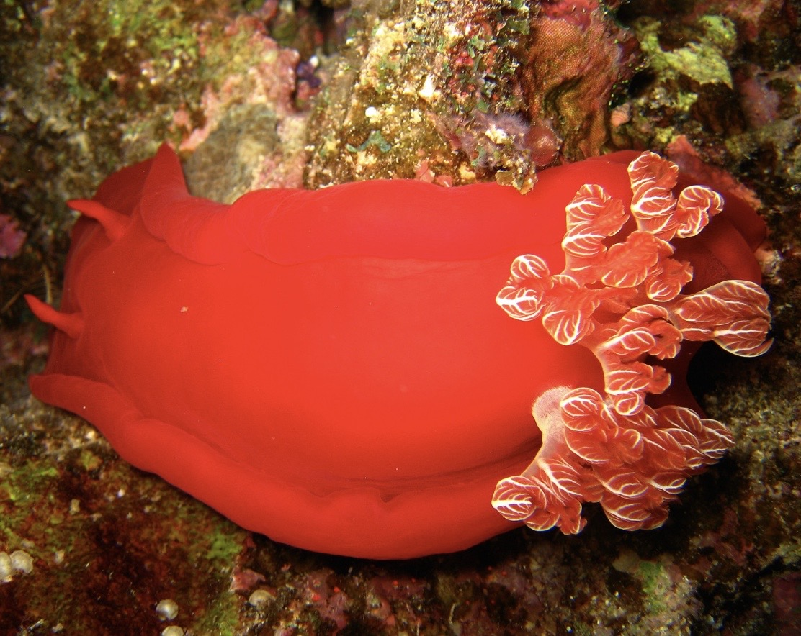

spanish shawl
This nudibranch displays a stunning set of colors: the body is purple, the cerata are orange and the rhinophores are scarlet. The neon orange appendages on the back of Flabellinopsis iodinea are the cerata which extract oxygen from the sea water they are surrounded by and live in. The cerata are also extensions of the digestive system, and are used to store the stinging cells of the anemones and fan-like hydroids they eat. The red rhinophores are sensory structures used for detecting the presence of possible mates and prey. The purple, red, and orange colors are derived from a single carotenoid pigment, astaxanthin.

aegires
The Notodoris minor has a yellow background colour and a pattern of diagonal and transverse black lines arranged in a network covering the entire body. The gills and rhinophores are yellow, but in younger specimens and with some adults, there may be some black pigmentation.

cyerce nigricans
Cyerce nigricans is a species of sacoglossan sea slug, a shell-less marine opisthobranch gastropod mollusk in the family Caliphyllidae.The length of the slug is about 4 cm.This species occurs in the Pacific Ocean and the Indian Ocean.

spanish dancer
The Spanish dancer is one of the largest species and best swimmers of the nudibranchs. Nudibranchs are mollusks who don't have shells in their adult stage. When the Spanish dancer swims, the wide edges of its mantle (the parapodia) are pushed through the water in a graceful undulating movement reminiscent of flamenco dancers. The Spanish dancer is not just known for its dance. It has a reproductive strategy of covering its egg cluster, also called a sea rose, with toxins taken from their venomous food sources in order to protect the eggs from predators

nebrotha
Nembrotha cristata is a large black nembrothine ("nembrothid" in much of the literature) that grows to at least 50 mm in length. Its body is covered with raised green nodules. The rhinophores and gills are black, edged in green. Other than the difference in colour, this species is similar in appearance to Nembrotha yonowae.

chromodoris
Chromodoris lochi, common name Loch's chromodoris, is a species of colourful sea slug, a dorid nudibranch, a marine gastropod mollusk in the family Chromodorididae.This species is found in the tropical waters of the central Indo-Pacific region and is known to range from Malaysia, Indonesia, Philippines to Fiji and the northern coast of Australia.